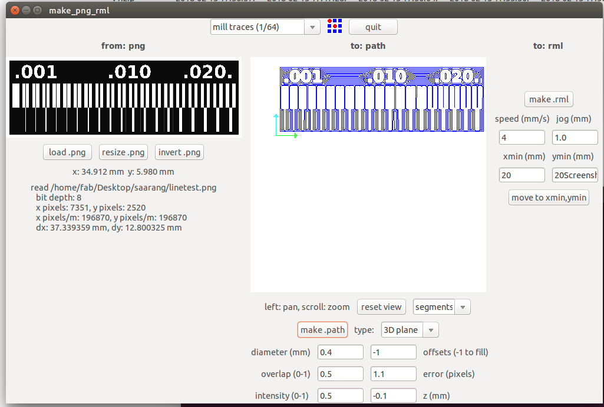

- Make an in-circuit programmer by milling the PCB
- Optionally, trying other processes
Introduction
This week Assignment was make an in-circuit programmer by milling the PCB.i,am very much intersted in electronics.This week we need to build our own ISP(In-system programming),also called in-circuit serial programming (ICSP).we are building an Progarmmer for RISC-(Reduced Instruction Set Computer)based Microcontrollers, it's a Poppular Architecture used in Controlers. i,also worked with Several RSIC systems like Arduino , MSP430... Arduino uno is a Poppular Development Board based Atmel-328P MicroController's and it's comes with in-built Circuit Progarmmer.
What is ISP(In-system programming)..?
To program a chip, we will need a special programmer which reads commands from USB to drive the SPI lines to program the chip.SPI stands for Serial Peripheral Interface and is a way for microcontrollers to communicate with each other or with the outside world. It's also called 3-wire sometimes because it uses three wires to communicate.
- VCC - Postive Voltage
- GND - Ground
- RST - Reset Pin
- MISO- Master In Slave Out
- MOSI- Master Out Slave In
- SCK - Serial Clock
In here MISO,MOSI, and SCK are the most importent.
In SPI system , there will a main Module act as a Master and some peripheral act as Slave.when master need to send some data/need to communicate with slaves ,the MOSI channel will be activate based on the SCK(Serial Clock),so the communication will happen in givin Clock time , all the slave will be act as a Input and Master act as Output so the Master can give Instruction ,like this if the slave need to communicate to the Master they can use MISO that's means the Master can be act as Input and Slaves will be act as Output ,therefore Slave can give Feedback to the Master .
In this week we don't need to design any of the Circuit board , jut need to make our own FabISP verisons.
PCB Fabrication
We got all the PCB designes so no need to design one,after the design we need the Fabricate the PCB, there are Several methods.like PCB chemical etching ,Photoresist PCB laminates and PCB Machine Milling.
In here we are using PCB Milling, milling is the process of removing areas of copper from a sheet of printed circuit board material to recreate the pads. We will be focusing on the Milling process.
machine Details
In Our Lab We have the Modella MDX 20 to machine our PCB. Modella is a Desktop milling machine that is capable of milling wood, wax, MDX,and circuit board blanks. It is compatible with most of the 2D and 3D CAD softwares. It has a small bed which moves in the Y-axis, a Tool head which moves in the X-axis and the end effector which moves in the Z-axis. It supports many milling bits and is versatile. The machine itself has a tiny foot print and can be placed on a table.
We use the fab modules to give commands to the Modella and run the cutting program.we need to set the X,Y and Z axis manually.take care in removing the milling cutters and correcting the zero setting.
How it's work (Modella MDX 20)....?
Modella is like an ordinary 3-Axis CNC machines, Each axis is driven by a stepper motor and the cutting program tells the machine where to go by giving coordinates by G.code to the machine in real time.
The Fab Module software will convert .png image in to a we series of tool paths, these tool paths are defined by their coordinates and G-code. The .png image is a black and white layout of the board, and the black portions will be milled and the white portion is where the copper will be left.
We have two processes in making a PCB, The first one is milling the traces to get the circuit board pattern, and the second is cutting out the board from the base copper clad.
For milling traces, we use the 1/64th inch (0.4mm) bit and for cutting 1/32th (0.8mm) inch bit.i'll examplain all things one by one.
Circuit Schematic
I,am Using FabTiny ISP Documentaion and Source file by Brian Mayton and we can get all the resource here.FabTinyISP

We are using Attiny 45 , it's 8-bit AVR Micorcontroller From Atmel (Now Microchip).

It's have 8-Pins , and we can use the 5-Pins for our purpose.Acutally we are turnig the microcontroller into a micocontroller Progarmmer by using the Firmware and Circuit.
The Altium source files are available Here if you want to modify the design.
Setting up the machine
- First Make sure to use some Sacrificial material on top of the bare metal base , it will prevent the damage of bit or the machine’s table.
- Check the Drilling bit's , first we need mill the trace then cut,and make sure to use the correct bit.when we start to mill trace check the bit because the previous person will cut his board with cutting bit and that will be the default when we start to work.
- Fix the PCB on top of the Sacrificial layer, better to use a double sided tape
- For tighten the bit ,first click view then the table should come out and the head will move to the far right,now load the bit you want to use, for milling traces, we use the 1/64th inch bit and for cutting 1/32th inch bit. Now insert the bit and use the Allen key to tighten the screw. Make sure it is tight on both sides.
- For Move the (0,0) Position click the View mode again.
- Now Set the X'axis and Y'axis for by clicking on move to Xmin and Ymin on the Fab Module.
- Set Z'axis by using Up and Down on the Control panel
- Before starting Milling check your speed and depth settings and the tool position on the fab modules window.
PCB Fabrication
First Download the Milling and Cutting Schematics here

We are using FR-1 Grade PCB.
open Fab Modules by typing fab on linux terminal or you can use the online version.
In Fab Module Select Image(.png) as Input and Roland MDX-20 mill(rml) as ouput Process and Click make_png_rml .
Now Fab Module will open a new window, and here we need to image for milling by clicking load.png, and don't forget to select the mill trace (1/64) for milling and click the make.path to create path for milling.
Now set the 'X'axis and 'Y'axis
First clik the View button on the Modela Control panel.
Now change the bit ,For milling we use 1/64 bit.
After tighten the bit, click the View button to get back to Home position.
Now set the Correct X and Y axis based on our PCB board Position.
For setting Z'axis ,set the x and y then by using UP and Down button just stop the nearby the PCB and then losen the 'Bit' and tight it when it's touch the PCB , that's all we now set the Z axis.
Don't forget the X and Y axis.if we face any issue like power failure of application forzen we can't start it same postion without the X and Y axis.
Now Click Make.rml to genrate instruction after that Send it! to start Milling.
Now we successfully milled the Trace
Next Cut the Trace, First change the Bit,For Cutting we use 1/32
so first load the Image in Fab Module and make the path after that send it to machine to cutting
make sure to set the bit as the cut board(1/32) and do the same that we did for milling , make.path and make.rml and start process by clicking Send it!

We successfully completed cuting .
here our PCB
Soldering
I have Some exerience in Through hole soldering , but here we are going to handle SMD (Surface Mount Devices) components.
First i Collected all the component that we need to build our ISP
- 1x ATtiny45 or ATtiny85
- 2x 1kΩ resistors
- 2x 499Ω resistors
- 2x 49Ω resistors
- 2x 3.3v zener diodes
- 1x red LED
- 1x green LED
- 1x 100nF capacitor
- 1x 2x3 pin header
I placed Placed PCB on a Double tape Insulation before soldering.and each componets soldering i checked continuity using multimeter to ensure componet is successfull solderd.
Successfull Soldered all the Componets
we need to short the jumber for Progarmming the ISP
Flashing Firmware
Next step is to flash/load the Firmware into the board.First Download the firmware here
I using Linux , so first we need to install avr-gcc tool-chain, type this on terminal to install tool-chian
sudo apt-get install avrdude gcc-avr avr-libc make
After Installtion unzip the downloaded firmware and open terminal there.
Now we can see the files , next we need to open the Makefile for ensuring it's configured for the ATTiny.i used nano to open the file ,
just type nano Makefile .
Now we can confirm that, it's configured for the ATTiny
Before falshing make sure we are shorted the Progarmming Jumber on our PCB. and also make a Connector for ISP header,
We need another Progarmmer for Progarmme the ISP Progarmmer , i used a previous student ISP to flash my ISP firmware.
Now we are ready to flash.
In terminal (at the firmware file path) type Make to Genarate the hex for flashing.
Now we can see some new files,that was automatically genarated make file script.
Now Connect the Old ISP and connect to our new ISP. and check the new ISP was detected in Computer by Typing lsusb
Now we are ready to flash.
Type make flash to flash the firmware to new ISP.
Now we are successfull flased.
We need activate the fuse in order to act our ISP as a progarmmer.For activating fuse make fuse it will automatically , activate the fuse.
After the Flashig we need to remove the jumber
Removing the jumber is not mandatory, we can also do that by commad , make rstdisbl , it will actually disable the reset pin internally , once we done that we can't progarmmer the ISP board with new firmware.
Now we have the ISP Board
I secure the ISP by applying some hot-glue as top layer.
Testing
We need to test our New ISP is detected by the Computer or not
In here i successfull flashed , but after the flash PC can't detect the ISP , i tried lot of times , keep flshing.one of my fried was successful detected by the commputer , so i did some inspection and found that i used wrong resistor so changed and it's worked.becasue the 49 ohm resistor used as Resistance to data lines, so 49k it's huge one so it can't communicate to other head.Problem was i used the resistor 49k ohm insted of the 49 ohm .
In here you can see i wrong resistor .used 49k ohm insted of 49 ohm there a 1000 more ohms, so i just replaced it with Solder wick.
Desoldered the 49k ohm resistor and soldered 49 ohm resistor.
Now you can see the resistor changed 4992 to 49A9.
After i tested with linux machine
Hero shots
Group Assignment
This Week we need characterize the specifications of our PCB production process i exaplined all procedure on the PCB Production section so next one is to find-out the how much resolution of 1/64 and 1/100 bit can mill and find out the difference.
This is our test pad , so let's mill it.first i tried with 1/64 bit ,
you can see here some copper part is not milled correctly,because i used offset as 4
Now i used offset as -1 , now you can see the the to.path section now it's filled completed.
Now we got perfect one, there is no extra copper in this board , we can clearly see 1/64 only milled 0.20, and all other it's just passed.
So , next i tried with 1/32
and milled it.
We can clearly see ,all this messed up with 1/32 . This images shows cleary the milling resolution of 1/64 and 1/32 bit .